Run 4
Innovation
Workshop
Japanese Format Innovation: Sushi & Miso Soup
20 Research-Backed Product Concepts
April 17, 2026
mception.ai
1
Furikake Everything Shaker 4.45
Six-blend furikake seasoning positioned as the Japanese Everything Bagel — shaker-format collection for the table next to salt and pepper.
2
Miso Squeeze Tube 4.35
Miso paste in aluminum squeeze tubes like Italian tomato paste — repositions miso from specialty ingredient to daily-reach condiment.
3
Konbini Onigiri 4.35
Grab-and-go rice triangles in dual-wrap nori-separating packaging — the most-consumed snack in Asia, zero CPG presence in the US.
4
Sushi-Grade Pantry 4.15
Restaurant-quality wasabi, nori, and ginger in a three-jar premium set — the gift that upgrades every home sushi night.
5
Post-Workout Miso Recovery 4.15
Electrolyte-boosted miso broth sachets for gym bags — warm, savory, whole-food alternative to synthetic recovery drinks.
Key Themes
- Format Deconstruction — Japanese restaurant components becoming standalone CPG. Furikake leaves the rice bowl, miso leaves the soup, ginger leaves the sushi plate. Each component has standalone value when properly packaged.
- Miso Beyond Soup — Functional beverages, compound ingredients, dessert applications. Miso is the most versatile fermented ingredient in the world, but US consumers only know it as soup. Seven of the twenty concepts reposition miso.
- Packaging as Innovation — Squeeze tubes, pods, pucks, sachets make traditional ingredients accessible. The product inside isn't new — the format is. This is the lowest-risk, fastest-to-market innovation pattern.
- Occasion Anchoring — Specific consumption moments drive purchase occasions. Post-workout, 3pm slump, Friday sushi night, morning ritual. Owning an occasion is more defensible than owning a shelf position.
- Premiumization — Japanese ingredients naturally command premium positioning. Real wasabi, aged miso, hand-pressed nori — the quality gap between authentic and commodity is dramatic and visible to consumers.
Market Context
Instant Miso
$1.42B → $2.76B
by 2033
Sushi Market
$6.82B → $13.54B
by 2035 (7.92% CAGR)
Seaweed Snacks
$2.43B → $4.66B
by 2030 (11.6% CAGR)
Gut Health Launches
+61% YoY
2024–2025 (FoodNavigator)
Effort (Low → High)
Impact (Low → High)
Quick Wins
Big Bets
Fill-Ins
Reconsider
1
2
3
4
5
6
7
8
9
10
11
12
13
14
15
16
17
18
19
20
Top 5
Ideas 6–20
Idea 01
4.45
Method: Cultural Trend Mining (#51)
Global Snacks / Cultural Format Transfer
Furikake Everything Shaker
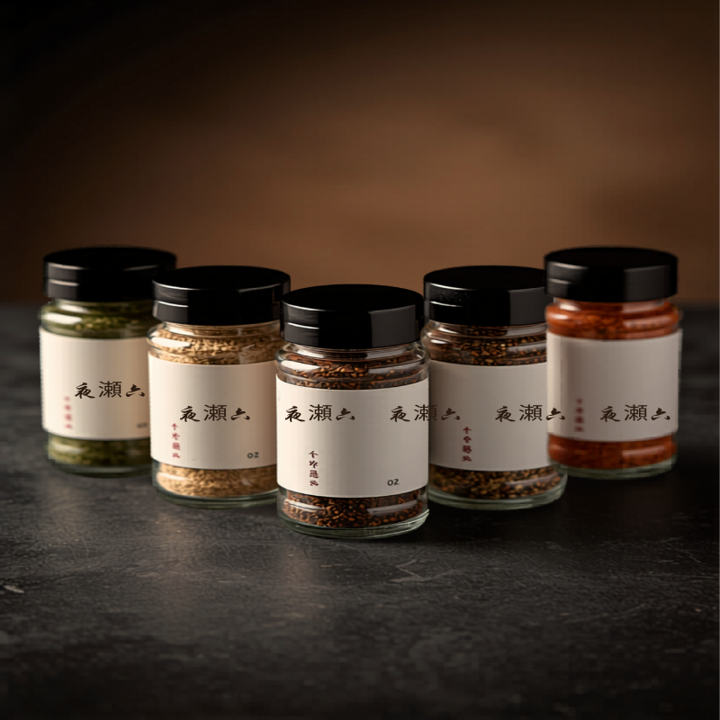
The Pitch
Furikake has been Japan's universal seasoning for decades — a blend of nori, sesame, bonito flakes, and umami that goes on everything from rice to eggs to ramen. American consumers are discovering it the same way they discovered Everything Bagel seasoning: as a condiment that makes boring food taste incredible.
The Furikake Everything Shaker packages six distinct blends in a shaker-format collection: Classic (nori, sesame, bonito), Wasabi Kick (wasabi peas, nori, chili), Salmon (wild salmon flakes, sesame, miso), Spicy Garlic (togarashi, garlic, nori), Truffle Umami (truffle salt, kombu, sesame), and Breakfast (egg, nori, furikake). Each 3oz shaker sits on the table next to salt and pepper.
The positioning is simple: "The Japanese Everything Bagel seasoning." It rides the same wave that made Trader Joe's Everything But The Bagel seasoning a cultural phenomenon — except furikake has 50+ years of product-market fit in Japan and a flavor profile (umami + crunch + nori) that nothing else on the American spice rack delivers.
RTBs
- Seaweed snack market growing 11.6% CAGR, reaching $4.66B by 2030 — furikake rides the same consumer adoption curve (Grand View Research)
- "Furikake on everything" emerging as social media trend — TikTok konbini haul videos routinely hit millions of views, exposing US consumers to the format
- Artisan Specialty Foods already stocks Aji Nori Furikake at $3.69/unit wholesale (SKU WAS132) and Nori Goma Furikake (SKU 10606) — supply chain is validated
- Everything Bagel seasoning proved the shaker-format condiment category at scale — Trader Joe's version became their #1 selling item; furikake is the natural next entry
Research Basis: Cultural Trend Mining (#51) — mapped the "combini haul" TikTok trend to a CPG format. Japanese convenience store content going viral exposes US consumers to furikake as a daily-use seasoning rather than a specialty ingredient.
Competitive Landscape
Nori Komi Furikake (JFC International) — $3.99/1.7oz at Asian grocery stores. Authentic but no lifestyle branding, buried in ethnic aisle. Single SKU, no variety.
Trader Joe's Furikake — $2.99, popular but single blend, no collection format. Positioned as a novelty item, not a pantry staple.
Everything But The Bagel (Trader Joe's) — $1.99/2.3oz. Category proof-of-concept. No umami, no nori, no Japanese flavor profile. Adjacent but not competitive.
Maldon Smoked Sea Salt — $7.99. Premium shaker seasoning that proved consumers pay for distinctive format + branding at the table.
Gap: No one sells a curated multi-blend furikake collection in shaker format with modern lifestyle branding at mainstream premium retail.
Closest Comparables
| Product | Retailer | Price | Notes |
|---|
| Trader Joe's Nori Komi Furikake | Trader Joe's | $2.99 | Single blend |
| JFC Aji Nori Furikake | Amazon | $6.50/3.5oz | Bulk, no lifestyle branding |
| Everything But The Bagel | Trader Joe's | $1.99 | Adjacent category proof |
Retailer Fit
- 1. Whole Foods — premium seasoning buyer, already stocks Japanese ingredients, endcap potential
- 2. Target — premium-accessible price point, strong "discover" section
- 3. Amazon DTC — subscription-friendly, bundle-friendly, giftable
Cost Model
Aji Nori Furikake base blend, 10.58oz$3.69/unit supplier-kb:artisan-specialty-foods:WAS132
Premium packaging (6-shaker collection box)$2.50/set assumption
Custom blend formulation (6 varieties)$1.00/set assumption
Labor / co-pack$2.00/set assumption
Target Retail$24.99/set ($4.17/shaker)
Gross Margin: 63%
Defensibility: assumption — needs co-packer validation
Operational Complexity
Simple
Standard dry-goods blending and packaging. No cold chain. No multi-temp. Shelf-stable. Co-pack widely available for dry seasoning blends. MOQ likely 5,000–10,000 units. Lead time: 6–8 weeks. Only complexity: sourcing authentic Japanese base ingredients at scale (vs. domestic substitutes).
Effort: 0.2
Impact: 0.9
Idea 02
4.35
Method: Packaging Innovation (#58)
Premium Foodservice / CPG
Miso Squeeze Tube
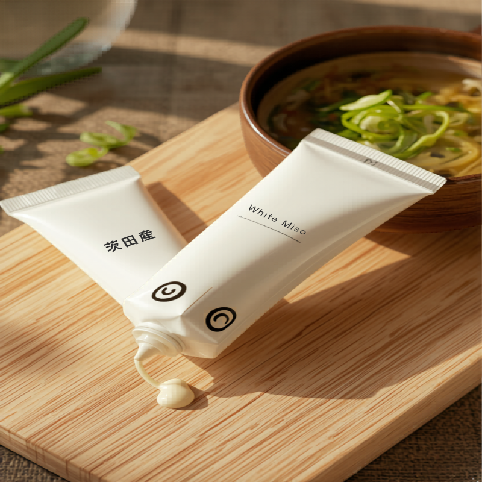
The Pitch
Most Americans who buy miso paste use it once, then watch the tub slowly oxidize in the back of the fridge until they throw it away. The problem isn't miso — it's the format. A 16oz plastic tub is designed for a Japanese household that uses miso daily. For an American who makes miso soup twice a month, it's a waste trap.
The Miso Squeeze Tube solves this by putting white miso paste in a 5oz aluminum tube — the same format Italians use for tomato paste. No oxidation (sealed behind the squeeze), no spoon needed, no mess. It lives on the fridge door next to mustard and sriracha. One squeeze into hot water makes instant miso soup. Two squeezes into a marinade transforms chicken thighs. A dab on toast creates an umami bomb.
The tube format repositions miso from "specialty ingredient I need a recipe for" to "condiment I reach for instinctively." That's the behavior change that unlocks a much larger market.
RTBs
- Namikura White Miso Paste available at $4.80/2.2lb wholesale (supplier-kb:artisan-specialty-foods:WMISO3) — COGS validated at scale
- Gut health food launches jumped 61% between 2024–2025 (FoodNavigator) — miso's natural probiotic positioning rides this wave without needing a health claim
- Squeeze tube format proven in premium condiments: Amore tomato paste ($4.99/2.8oz), Mutti tomato concentrate ($5.49/4.5oz) — consumers pay 3x per ounce for tube convenience
- Italian tomato paste tubes converted a "sometimes ingredient" into a "daily reach" — identical behavior-change opportunity for miso
Research Basis: Packaging Innovation (#58) — observed that tomato paste tubes transformed usage frequency. Applied the same format transfer to miso paste, which faces the identical "tub waste" problem.
Competitive Landscape
Hikari Organic Miso Paste — $4.99/17.6oz tub at Whole Foods. Industry standard. Oxidizes after opening, requires spooning, lives in the back of the fridge.
Miso & Easy (Marukome) — $3.49/liquid miso in a squeeze bottle. Closer but it's a diluted liquid, not paste. Different product entirely.
Amore Paste Tubes (tomato, garlic, etc.) — $4.99/2.8oz. Format proof-of-concept in the condiment category. Not miso.
Gap: No one sells miso paste in a tube format in the US. Every existing miso product uses the tub or sachet format.
Closest Comparables
| Product | Retailer | Price |
|---|
| Hikari Organic White Miso | Whole Foods | $4.99/17.6oz |
| Miso & Easy Squeeze | Amazon | $3.49/13.8oz |
| Amore Tomato Paste Tube | Target | $4.99/2.8oz |
Retailer Fit
- 1. Whole Foods — premium condiment aisle, miso buyer already exists, format innovation story
- 2. Sprouts — natural/organic positioning, health-conscious shopper
- 3. DTC-subscription — replenishment model, 2-tube/month cadence
Cost Model
White Miso Paste (Namikura), 2.2lb bulk$4.80/2.2lb ($0.44/5oz fill) supplier-kb:artisan-specialty-foods:WMISO3
Aluminum squeeze tube + cap$0.85/tube assumption
Labeling + carton$0.30/tube assumption
Labor / co-pack$0.50/tube assumption
Target Retail$6.99/5oz tube
Gross Margin: 70%
Defensibility: supplier-kb for miso cost; packaging assumption needs tube co-packer quote
Operational Complexity
Simple
Shelf-stable miso paste in sealed aluminum tubes. No cold chain required (miso is naturally preserved via fermentation). Standard tube-fill co-packing available from condiment manufacturers. MOQ: 5,000–10,000 tubes. Lead time: 8–10 weeks for custom tube + label design. Only challenge: finding a tube co-packer experienced with thick paste (vs. liquid sauce).
Effort: 0.2
Impact: 0.85
Idea 03
4.35
Method: Cultural Trend Mining (#51) / Analogous Inspiration (#15)
Global Snacks / Cultural Format Transfer
Konbini Onigiri
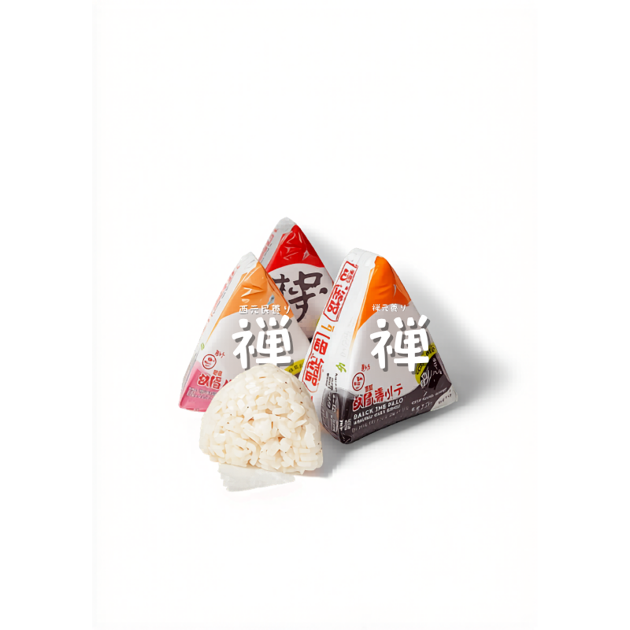
The Pitch
Onigiri — the Japanese rice triangle wrapped in nori — is the most-consumed grab-and-go food in Asia. Over 2.4 billion are sold annually through Japan's 58,000 convenience stores alone. The format is ingenious: a patented dual-wrap system separates the nori from the rice until you pull the tab, keeping the seaweed crispy and the rice moist.
American consumers are discovering onigiri through "combini haul" TikTok videos that routinely hit millions of views. NPR reported in September 2025 that Japanese convenience store chains are entering the US market. But no CPG brand has brought the grab-and-go onigiri format to mainstream US grocery deli coolers.
This is onigiri for the American deli case: three varieties (Spicy Tuna, Teriyaki Chicken, Umeboshi Plum), each in the signature triangular packaging with pull-tab nori wrapper. Positioned between the sandwich and the sushi section at $3.49 each — the same price as a protein bar but a complete meal.
RTBs
- 2.4 billion onigiri sold annually in Japan — the format has massive scale validation (JFC/7-Eleven Japan data)
- NPR (Sept 2025): Japan's konbini convenience stores entering US market — consumer awareness is being built by the brands themselves
- "Combini haul" TikTok videos regularly hit 1–5M views — organic demand building without paid marketing
- Sushi market growing 7.92% CAGR to $13.54B by 2035 (Business Research Insights) — onigiri is the grab-and-go format within this category
Research Basis: Cultural Trend Mining (#51) + Analogous Inspiration (#15) — the combini haul TikTok trend signals rising US demand, while the Japanese convenience store format provides a proven, scale-validated product architecture.
Competitive Landscape
7-Eleven (US) sushi section — $5.99–8.99 for basic sushi rolls. No onigiri format. Declining quality perception.
Spam Musubi (Hawaiian market) — $2.99–3.49. Regional proof that rice-based grab-and-go works in US convenience. Not Japanese positioning.
Onigiriz (NYC-based) — Fresh onigiri in select NYC locations. Artisan pricing ($4.50+), no CPG distribution.
Gap: Zero CPG onigiri products in mainstream US grocery. The format doesn't exist outside Japanese specialty stores and a handful of urban restaurants.
Closest Comparables
| Product | Retailer | Price |
|---|
| None at mainstream US grocery | — | Category-creation play |
| 7-Eleven Japan Onigiri | Japan only | ¥130–200 ($0.90–1.35) |
| Spam Musubi (various) | Hawaii/West Coast | $2.99–3.49 |
Retailer Fit
- 1. Whole Foods — deli cooler innovation, already has sushi section, premium grab-and-go buyer
- 2. Target — grab-and-go refresh initiative, "discover" positioning
- 3. B2B-foodservice — airline meals, office catering, campus dining
Cost Model
Sushi rice + seasoning, per onigiri$0.25 assumption
Protein filling (spicy tuna/teriyaki/umeboshi)$0.40 assumption
Nori dual-wrap packaging (patented format)$0.15 assumption — requires Japanese packaging supplier
Outer packaging + labeling$0.10 assumption
Labor / co-pack (manual assembly)$0.35/onigiri assumption
Target Retail$3.49/onigiri
Gross Margin: 64%
Defensibility: all assumptions — needs Japanese packaging supplier + fresh-food co-packer
Operational Complexity
Complex
Fresh product with 5–7 day shelf life. Requires cold chain throughout. Manual or semi-automated assembly (rice shaping, filling, nori wrapping). Dual-wrap packaging technology may require licensing from Japanese packaging companies. Distribution limited to markets with existing fresh-food DSD networks. High initial capex for format development.
Effort: 0.5
Impact: 0.9
Idea 04
4.15
Method: Premiumization (#56)
Premium Foodservice / CPG
Sushi-Grade Pantry
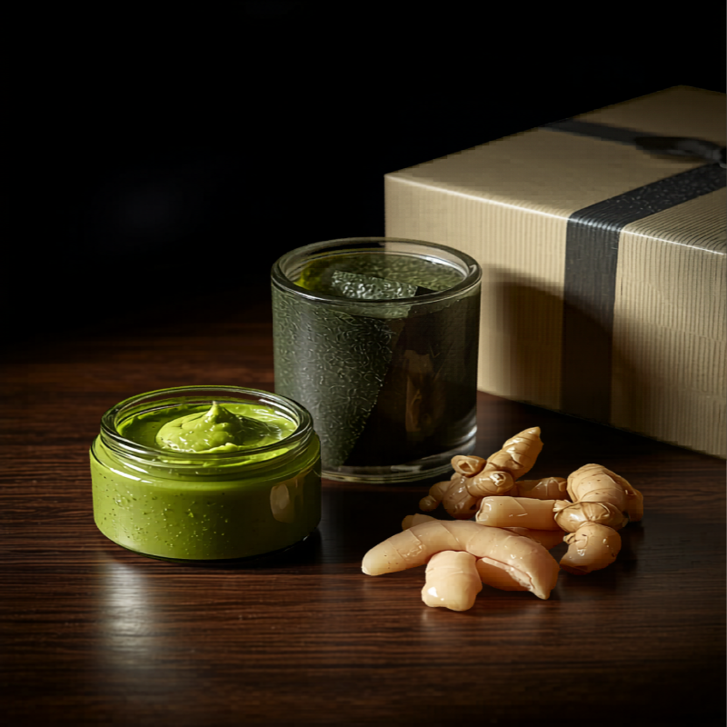
The Pitch
Every home sushi night starts with the same disappointment: the wasabi is fake (horseradish dyed green), the ginger tastes like vinegar, and the nori is stale. Restaurant sushi tastes better because the components are better — real hon-wasabi, hand-pressed nori, house-pickled ginger.
The Sushi-Grade Pantry is a three-jar set that brings restaurant-quality components home: (1) Real hon-wasabi paste (not horseradish), (2) Hand-pressed nori sheets (thick, aromatic, properly toasted), and (3) House-style pickled ginger (delicate pink, fresh, less vinegar). Packaged in a washi-paper gift box with pairing cards explaining each component.
Positioned at $39.99, it's the gift you bring to someone's sushi night — or the self-purchase that upgrades every Tuesday night chirashi bowl. The premium is justified because real wasabi alone sells for $10–15 per tube at specialty retailers.
RTBs
- Real wasabi (Wasabia japonica) retails for $10–15/tube at specialty stores — consumers already pay premium for authenticity
- Artisan stocks Wasabi Powder at $9.21/2.2lb (SKU WASPOW2) and Pink Sushi Ginger at $20/11lb (SKU PGIN) — supply chain partially validated
- Japanese ingredient adoption accelerating: furikake, ponzu, yuzu, togarashi all crossed into mainstream Whole Foods/TJ's in 2025–2026
- Premium food gift market growing — the set format (flights, tastings, pantry collections) proven by olive oil sets, hot sauce collections, and cheese boards
Research Basis: Premiumization (#56) — applied the premium upgrade pattern to the most common quality gap in home sushi: the condiment components.
Competitive Landscape
S&B Wasabi Paste — $3.99/1.52oz at most grocery stores. Horseradish-based, not real wasabi. Category default.
Roland Sushi Ginger — $3.49/10oz jar. Bright pink, heavily vinegared, chemical taste. Functional but not premium.
Various nori brands (Annie Chun's, Gimme) — $3.99–5.99/pack. Adequate for home use but not "sushi-grade" thick nori.
Gap: No one sells a curated, restaurant-quality sushi condiment set at premium retail. Each component exists individually but the gift-set curation is the innovation.
Closest Comparables
| Product | Retailer | Price |
|---|
| Real Wasabi Paste (Shizuoka brand) | Amazon | $12.99/1.5oz |
| Whole Foods house-brand Sushi Ginger | Whole Foods | $3.99/6oz |
| Various "sushi kits" (rice + nori + mat) | Amazon | $15–20 (tools, not premium ingredients) |
Retailer Fit
- 1. Whole Foods — gift-set placement, premium ingredient buyer, sushi night occasion
- 2. DTC-one-time — gift purchase, discovery box, holiday season
- 3. Amazon — giftable, bundle-friendly, Prime delivery
Cost Model
Real wasabi paste, 2oz tube$4.50 assumption — real wasabi sourcing TBD
Pink Sushi Ginger, 6oz jar portion$1.09 supplier-kb:artisan-specialty-foods:PGIN ($20/11lb)
Premium nori sheets, 10-pack$3.50 assumption
Washi paper gift box + pairing cards$3.00 assumption
Labor / co-pack$2.00/set assumption
Target Retail$39.99/set
Gross Margin: 65%
Defensibility: supplier-kb for ginger; wasabi + nori + packaging assumptions need validation
Operational Complexity
Moderate
Shelf-stable set assembly. No cold chain needed (wasabi paste is shelf-stable, ginger is pickled, nori is dried). Gift box assembly is manual but low-complexity. Challenge: sourcing real wasabi at scale (most "wasabi" in the US is horseradish). May need Japanese import partnership for authentic hon-wasabi.
Effort: 0.3
Impact: 0.8
Idea 05
4.15
Method: Occasion-Based Thinking (#59)
Beverage (Functional / Premium)
Post-Workout Miso Recovery
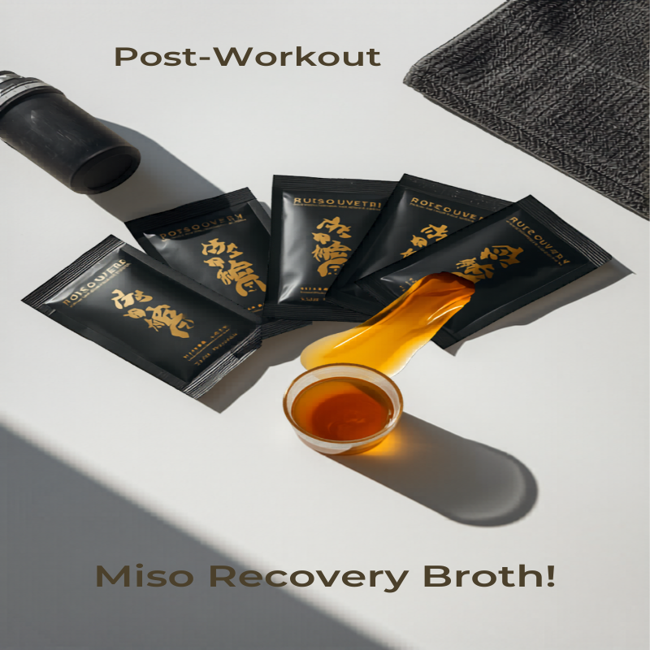
The Pitch
After a workout, most people reach for a cold protein shake. But the Japanese have known for centuries that warm miso broth is one of the most effective recovery drinks: naturally rich in electrolytes (sodium, potassium), amino acids from fermented soy, and probiotics for gut health. It's everything a recovery drink should be, wrapped in a format that's comforting instead of clinical.
Post-Workout Miso Recovery packages this insight in gym-bag-friendly single-serve sachets. Each sachet contains concentrated miso paste with added electrolytes, collagen peptides, and ginger. Tear, pour into hot water, stir. Positioned in the functional beverage aisle next to protein shakes and LMNT electrolyte packets — but as the warm, savory, whole-food alternative.
The positioning targets the growing segment of fitness-conscious consumers who are moving away from synthetic supplements toward whole-food recovery. Miso is the original functional food — it just needs modern packaging and occasion-based marketing.
RTBs
- Gut health category worth $14B, projected $32B by 2035 — miso's natural probiotic content positions it without needing an FDA health claim
- Red Aka Miso Paste available at $4.80/2.2lb wholesale (supplier-kb:artisan-specialty-foods:RMISO3) — COGS validated
- LMNT electrolyte packets sell for $1.50/packet at $45/30-pack — proves single-serve functional sachets command premium pricing
- Functional beverage market growing faster than any food category in 2026 (BevSource) — warm functional beverages are an underserved format
Research Basis: Occasion-Based Thinking (#59) — anchored to the post-workout moment, which has established purchase behavior (protein shakes, electrolyte packets) but no warm, savory, whole-food option.
Competitive Landscape
LMNT Electrolytes — $45/30-pack ($1.50/sachet). Powder-based, cold water, synthetic. Massive brand.
Kettle & Fire Bone Broth — $6.99/16.9oz carton. Warm, savory, functional. But too large for gym bag, not single-serve.
Instant Miso Soup (Marukome) — $3.99/12-pack ($0.33/serving). Cheap but no functional positioning, no electrolyte boost, not gym-oriented.
Gap: No warm, savory, single-serve functional recovery product exists in the gym bag / electrolyte space.
Closest Comparables
| Product | Retailer | Price |
|---|
| LMNT Electrolyte Packets | Amazon | $45/30-pack |
| Kettle & Fire Bone Broth Sipping Cups | Target | $4.99/cup |
| Marukome Instant Miso | Walmart | $3.99/12-pack |
Retailer Fit
- 1. Amazon DTC — subscription model, gym-bag discovery, Prime delivery
- 2. Whole Foods — functional beverage aisle, health-conscious buyer
- 3. GNC/Vitamin Shoppe — supplement adjacency, workout occasion
Cost Model
Red Aka Miso Paste concentrate, per sachet$0.15 supplier-kb:artisan-specialty-foods:RMISO3 ($4.80/2.2lb)
Collagen peptides, per sachet$0.20 assumption
Electrolyte blend (sodium, potassium, magnesium)$0.08 assumption
Single-serve sachet packaging$0.12 assumption
Labor / co-pack$0.10/sachet assumption
Target Retail$1.99/sachet ($49.99/30-pack)
Gross Margin: 67%
Defensibility: supplier-kb for miso; collagen + electrolyte + packaging assumptions
Operational Complexity
Moderate
Dry-goods blending and sachet filling. No cold chain. Shelf-stable. Needs formulation work to balance miso flavor with electrolyte mineral taste. Co-packing available from supplement/powder manufacturers. MOQ: 10,000–25,000 sachets. Lead time: 10–12 weeks. Challenge: achieving "tastes good" with added minerals — formulation R&D is the key risk.
Effort: 0.4
Impact: 0.8
Idea 06
4.05
Method: Mashup (#24) / Packaging Innovation (#58)
Global Snacks / Cultural Format Transfer
Nori Crisps
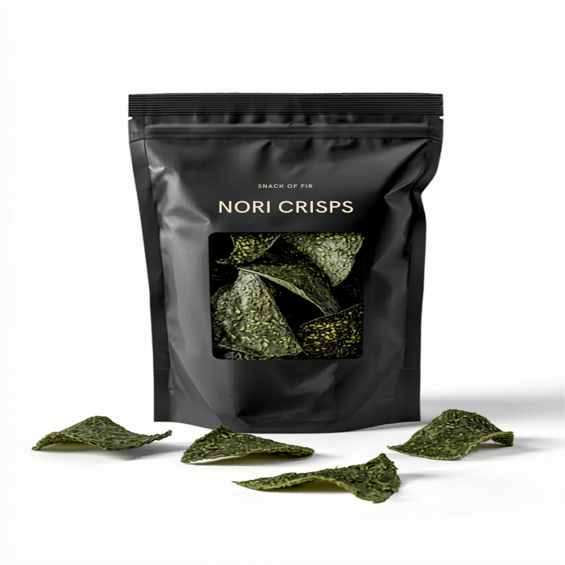
The Pitch
Seaweed snacks have already proven American consumers will eat nori out of a bag. The problem is the current format: paper-thin sheets that shatter on contact, deliver minimal crunch satisfaction, and feel more like a health obligation than a snack.
Nori Crisps fix this by layering nori with rice flour and sesame, then baking them into thick-cut chip-format crisps. Think of the texture difference between a rice cake and a thick tortilla chip — that's the upgrade. Four flavors: Sea Salt & Sesame, Wasabi, Teriyaki, and Furikake. Positioned in the snack aisle between veggie chips and rice crackers at $4.99/3oz — not in the "Asian food" section.
The seaweed snack market is growing at 11.6% CAGR and is projected to nearly double to $4.66B by 2030. North America is the fastest-growing region. Nori Crisps ride this wave with a format that solves the category's biggest limitation: unsatisfying texture.
RTBs
- Seaweed snack market $2.43B → $4.66B by 2030 at 11.6% CAGR — North America fastest-growing region (Grand View Research)
- Texture innovation driving snack category: flaky (+50%), crispy (+49%), airy (+43%) YoY interest increases (Euromonitor)
- Artisan stocks Nori Flakes at $72/case of 10x3.5oz (SKU NORIF) — raw material supply validated
- gimMe and Annie Chun's proved seaweed snacks at scale, but thin-sheet format limits category expansion into mainstream snacking
Research Basis: Mashup (#24) + Packaging Innovation (#58) — crossed nori with chip format and layered rice flour for thickness. Solving the "texture gap" that keeps seaweed snacks niche.
Competitive Landscape
gimMe Organic Seaweed Snacks — $3.49/0.7oz. Market leader. Thin sheets, fragile, premium but small portions.
Annie Chun's Seaweed Crisps — $3.29/1.27oz. Closer to chip format but still thin, limited flavors.
Trader Joe's Roasted Seaweed Snack — $1.49/0.4oz. Budget entry, bare-bones.
Ocean's Halo Seaweed Chips — $3.99/4oz. Best current comp, but corn-based not rice-based. Different texture profile.
Gap: No rice flour-layered, thick-cut nori crisp exists. Current seaweed snacks are all thin-sheet format.
Closest Comparables
| Product | Retailer | Price |
|---|
| gimMe Seaweed Snacks | Whole Foods | $3.49/0.7oz |
| Annie Chun's Seaweed Crisps | Target | $3.29/1.27oz |
| Ocean's Halo Seaweed Chips | Kroger | $3.99/4oz |
Retailer Fit
- 1. Target — snack aisle placement, price-accessible, discovery buyer
- 2. Walmart — mass market snack distribution, impulse-buy pricing
- 3. Costco — multi-pack format, bulk snacking, proven seaweed buyer
Cost Model
Nori flakes, per 3oz bag$0.75 supplier-kb:artisan-specialty-foods:NORIF ($72/case)
Rice flour + sesame + seasoning$0.30 assumption
Bag packaging + labeling$0.20 assumption
Labor / co-pack$0.40/bag assumption
Target Retail$4.99/3oz bag
Gross Margin: 67%
Defensibility: supplier-kb for nori; rice flour baking co-pack assumptions
Operational Complexity
Moderate
Baked snack production requires a co-packer with baking/frying capability. Standard shelf-stable snack packaging. No cold chain. MOQ: 10,000–50,000 bags depending on co-packer. Lead time: 8–12 weeks. Challenge: achieving consistent crisp texture with nori-rice flour layering — needs R&D for bake time/temperature optimization.
Effort: 0.2
Impact: 0.85
Idea 07
4.05
Method: Packaging Innovation (#58)
Premium Foodservice / CPG
Dashi Pods
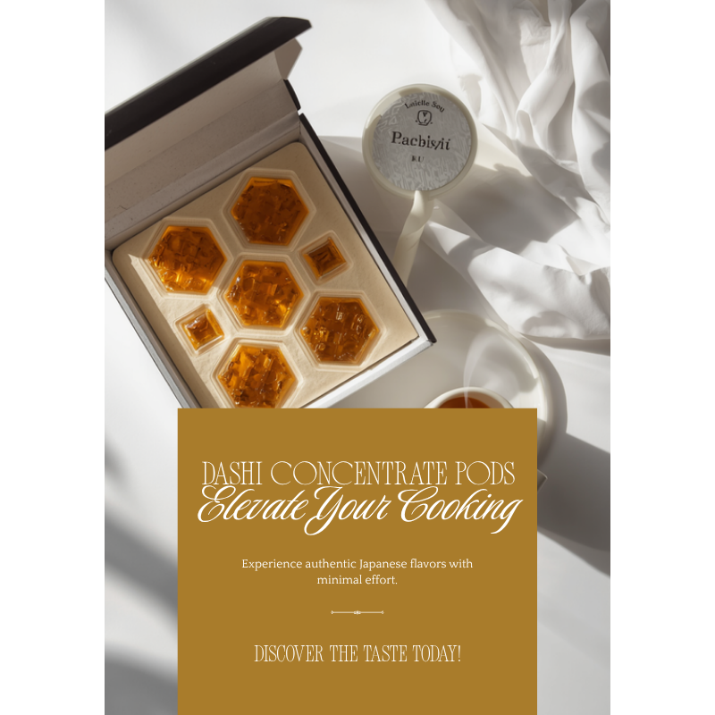
The Pitch
Dashi — the foundational broth of Japanese cooking — requires simmering kombu and bonito flakes for 30 minutes. Most Americans who want to cook Japanese food at home skip dashi entirely because it's too much work for a weeknight. Hondashi granules exist but taste metallic and one-dimensional.
Dashi Pods apply the Keurig logic to Japanese cooking stock: single-serve liquid concentrate pods that dissolve in hot water in 30 seconds. Each pod contains real kombu extract, smoked katsuobushi concentrate, and a touch of mirin — delivering restaurant-quality dashi without the 30-minute simmer.
Three varieties: Classic Kombu-Bonito, Shiitake Vegetarian, and Spicy Yuzu. Sold in a 12-pod box at $14.99 ($1.25/pod). One pod makes 2 cups of broth — the base for miso soup, ramen, udon, risotto, or any recipe that calls for stock. Positioned against Better Than Bouillon as the clean-label, Japanese alternative.
RTBs
- Hondashi Fish Soup Base available at $25.20/case of 12x2.2lb (SKU HONDA) — dashi ingredient supply validated through Artisan
- Better Than Bouillon sells $300M+/year (Southeastern Grocers data) — proves concentrated cooking stock pods have mass market demand
- Japanese food is the #2 fastest-growing cuisine in US restaurants — home cooking follows restaurant trends by 2–3 years
- Single-serve pod format proven across categories: coffee (Keurig), broth (BOU), seasoning (True Lemon) — consumers pay for portioned convenience
Research Basis: Packaging Innovation (#58) — applied the single-serve pod/concentrate format proven by Keurig, BOU Broth Cubes, and True Lemon to the dashi category, which is stuck in either "bulk powder" or "DIY simmer" formats.
Competitive Landscape
Hondashi (Ajinomoto) — $8.99/5.28oz granules at Asian grocers. Industry standard. MSG-forward, one-dimensional flavor. Bulk format.
BOU Broth Cubes — $4.99/6 cubes. Clean-label broth cubes. Not Japanese. Good format reference.
Better Than Bouillon — $4.99/8oz. Paste format, spoon-and-stir. High sales but not single-serve.
Bonito Dashi Packs (various) — $6–8/10 sachets. Teabag-style dashi sachets. Closer but requires steeping (5–10 min).
Gap: No liquid concentrate dashi pod exists. All current options are granules, paste, or teabag-steep format.
Closest Comparables
| Product | Retailer | Price |
|---|
| BOU Broth Cubes | Target | $4.99/6 cubes |
| Hondashi Granules | Asian grocery | $8.99/5.28oz |
| Dashi Pack (Kayanoya) | Amazon | $12/10 sachets (steep format) |
Retailer Fit
- 1. Whole Foods — clean-label cooking stock, Japanese ingredient section
- 2. Amazon — subscription-friendly, cooking enthusiast buyer
- 3. Target — meal-kit adjacency, weeknight cooking convenience
Cost Model
Dashi concentrate (kombu + bonito extraction), per pod$0.30 assumption — needs extraction co-packer
Pod packaging (heat-sealed liquid pod)$0.15 assumption
12-pod box + insert$0.80/box assumption
Labor / co-pack$0.15/pod assumption
Target Retail$14.99/12-pod box ($1.25/pod)
Gross Margin: 62%
Defensibility: all assumptions — dashi concentrate extraction is custom manufacturing
Operational Complexity
Moderate
Liquid concentrate production requires a co-packer capable of extraction (kombu + bonito → concentrated liquid) and heat-sealed pod filling. Shelf-stable via heat treatment. No cold chain once sealed. MOQ: 5,000–10,000 boxes. Lead time: 12–16 weeks (extraction R&D + pod manufacturing). Challenge: achieving authentic dashi flavor in concentrate form without MSG or off-flavors.
Effort: 0.3
Impact: 0.8
Idea 08
4.00
Method: Occasion-Based Thinking (#59)
Beverage (Functional / Premium)
3PM Miso Break
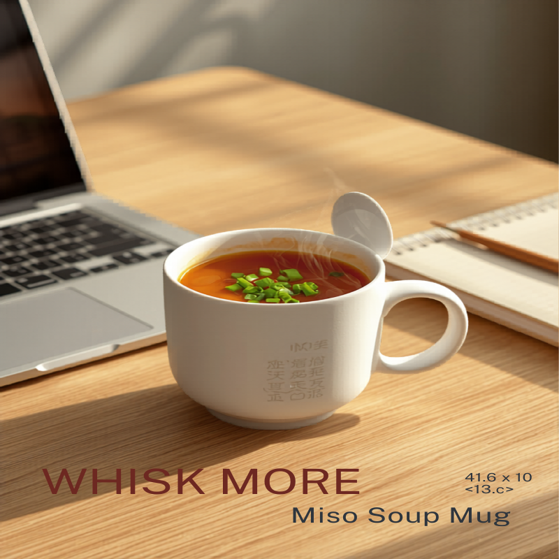
The Pitch
The 3pm slump is universal — and right now the only solutions are coffee (more caffeine), a snack bar (sugar crash), or willpower. In Japan, the answer is a cup of miso soup: warm, savory, 15 calories, gut-healthy, and deeply satisfying without any crash.
3PM Miso Break is a desk-side miso cup designed for the afternoon ritual. The cup contains a single-serve miso paste packet, freeze-dried tofu cubes, and wakame. Add hot water from the office kettle, stir. 60 seconds from packet to warm comfort. Positioned as the Japanese alternative to afternoon tea — and marketed as an occasion, not just a product.
The packaging features a modern ceramic-look cup (actually recyclable paper) with a built-in stirrer. Sold in 10-packs at $12.99 ($1.30/cup) for desk drawers and office pantries. The branding leans into the ritual: "Your 3PM Moment."
RTBs
- White Miso Paste at $4.80/2.2lb wholesale (supplier-kb:artisan-specialty-foods:WMISO3) — COGS validated
- Wakame at $20.25/case of 8x16oz (supplier-kb:artisan-specialty-foods:WAKSW) — supply validated
- Snacking accounts for 20% of global food/beverage sales; consumers snack at least once daily (Euromonitor 2026)
- Instant soup market dominates the office/desk occasion — but "soup" connotes lunch, not afternoon. "Miso break" reframes the occasion
Research Basis: Occasion-Based Thinking (#59) — anchored to the 3pm afternoon slump, a well-documented consumption occasion with few warm, savory, low-calorie options.
Competitive Landscape
Marukome Instant Miso — $3.99/12-pack ($0.33/serving). Cheap but zero branding, no occasion positioning, basic flavor.
Cup-a-Soup (Lipton) — $3.49/4-pack ($0.87/cup). Office staple but dated brand, high sodium, not clean-label.
Numi Organic Broth Sippers — $5.99/5-pack ($1.20/cup). Closest concept but bone-broth based, not miso. Good format reference.
Gap: No premium, occasion-branded instant miso positioned for the afternoon break exists.
Closest Comparables
| Product | Retailer | Price |
|---|
| Marukome Instant Miso | Walmart | $3.99/12-pack |
| Numi Broth Sippers | Whole Foods | $5.99/5-pack |
| Cup-a-Soup Instant | Target | $3.49/4-pack |
Retailer Fit
- 1. Amazon — office pantry bulk purchase, subscription
- 2. Whole Foods — clean-label, wellness positioning
- 3. Target — pantry-stock format, accessible price
Cost Model
White miso paste, per cup$0.10 supplier-kb:artisan-specialty-foods:WMISO3
Freeze-dried tofu + wakame$0.15 supplier-kb:artisan-specialty-foods:WAKSW (partially)
Cup + lid + stirrer packaging$0.25 assumption
Labor / co-pack$0.10/cup assumption
Target Retail$12.99/10-pack ($1.30/cup)
Gross Margin: 54%
Defensibility: supplier-kb for miso + wakame; packaging + tofu assumptions
Operational Complexity
Simple
Dry-goods assembly. Shelf-stable. No cold chain. Standard cup-soup co-packing infrastructure. MOQ: 5,000–10,000 boxes. Lead time: 6–8 weeks.
Effort: 0.25
Impact: 0.75
Idea 09
3.95
Method: JTBD (#4)
Fermented Foods / Gut Health
Morning Miso Sachets
The Pitch
Apple cider vinegar shots became a $1.5B category by promising gut health in an unpleasant format. Miso delivers the same benefits — probiotics, amino acids, B vitamins — in a format that actually tastes good. The Morning Miso Sachet is positioned as the Japanese gut-health ritual: tear a sachet, stir into hot water, drink. Daily use. 30-day supply.
Each sachet contains concentrated white miso paste with live probiotics (shelf-stable strains) and marine collagen. No sugar, no vinegar burn, no choking it down. Just warm, savory, comforting umami that happens to be one of the most nutrient-dense fermented foods on earth.
Sold in 30-sachet boxes at $29.99 ($1.00/day) — the same price as a premium probiotic supplement but delivered as food, not a pill.
RTBs
- Gut health launches jumped 61% YoY between 2024–2025 (FoodNavigator) — fastest-growing functional food claim
- 59% of consumers rate gut health as "highly important for overall well-being" (Innova Market Insights 2026)
- Namikura White Miso at $4.80/2.2lb (supplier-kb:artisan-specialty-foods:WMISO3) — COGS validated
- Probiotic supplement market $65B+ — miso sachets compete on the "food, not pills" trend
Research Basis: JTBD (#4) — identified the consumer job: "I want a daily gut-health ritual that doesn't taste terrible and isn't a pill."
Competitive Landscape
Bragg Apple Cider Vinegar Shots — $3.49/4-pack. Market leader in gut-health shots. Acidic, unpleasant taste that consumers tolerate.
Seed Probiotics — $49.99/month subscription. Premium probiotic capsules. Effective but pill format.
Tsubi Soup Instant Miso — $9.99/6-pack. Freeze-dried miso but not positioned as functional/daily ritual.
Gap: No daily gut-health sachet positioned as a warm, food-based probiotic ritual. ACV shots own the "daily gut health" occasion but with a terrible format.
Closest Comparables
| Product | Retailer | Price |
|---|
| Bragg ACV Shots | Target | $3.49/4-pack |
| Tsubi Soup Instant Miso | Whole Foods | $9.99/6-pack |
| Seed Daily Synbiotic | DTC | $49.99/month |
Retailer Fit
- 1. DTC-subscription — 30-day cadence, daily ritual = high retention
- 2. Whole Foods — functional food section, wellness buyer
- 3. Amazon — Subscribe & Save, health-conscious buyer
Cost Model
White miso concentrate, per sachet$0.08 supplier-kb:artisan-specialty-foods:WMISO3
Shelf-stable probiotic culture$0.12 assumption
Marine collagen peptides$0.10 assumption
Sachet packaging$0.08 assumption
Labor / co-pack$0.08/sachet assumption
Target Retail$29.99/30-pack ($1.00/sachet)
Gross Margin: 54%
Defensibility: supplier-kb for miso; probiotic + collagen assumptions
Operational Complexity
Moderate
Dry powder/paste blending + sachet filling. Shelf-stable. No cold chain. Challenge: formulating shelf-stable probiotics that survive the drying/packaging process and remain viable. Requires probiotic ingredient supplier partnership. MOQ: 10,000–25,000 boxes. Lead time: 12–16 weeks.
Effort: 0.2
Impact: 0.8
Idea 10
3.95
Method: SCAMPER (#21)
Premium Foodservice / CPG
Miso Butterscotch Sauce
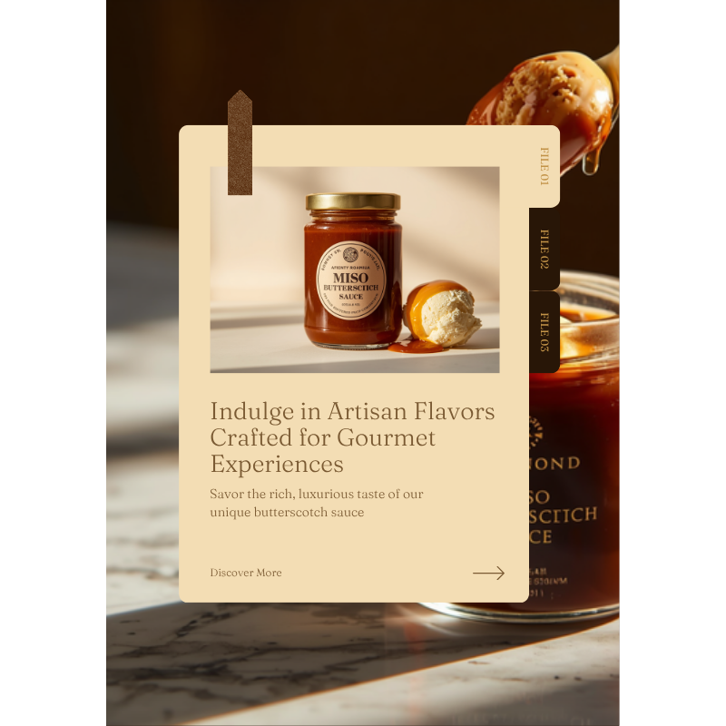
The Pitch
The sweet-savory trend has been building for a decade — salted caramel, miso caramel, brown butter cookies. But no one has bottled the most interesting version: miso butterscotch. White miso adds umami depth and a faint saltiness that transforms basic butterscotch from a one-note sweetness into a complex, almost addictive sauce.
Miso Butterscotch Sauce is a jar of premium dessert condiment — pour it on ice cream, drizzle on pancakes, use it in baking, add it to cocktails. The recipe is simple: butter, brown sugar, cream, and white miso paste. The result is a golden sauce with visible miso specks that tastes like caramel's more sophisticated Japanese cousin.
Positioned at $12.99/8oz jar in the premium condiment/ice cream topping aisle. The same shelf that holds salted caramel sauce, hot fudge, and Biscoff spread.
RTBs
- Miso caramel appeared on top restaurant menus in 2024–2025 — Momofuku, Eleven Madison Park, and dozens of pastry chefs use miso in desserts
- White Miso at $4.80/2.2lb (supplier-kb:artisan-specialty-foods:WMISO3) — ingredient supply validated
- Salted caramel sauce category at retail = $500M+ — miso butterscotch is the natural premiumization of this proven category
- Sweet-savory trend confirmed by Half Baked Harvest (8M followers) featuring "miso brown butter caramel" in 2025 best-of list
Research Basis: SCAMPER (#21) — Reverse: applied miso (savory) to butterscotch (sweet), creating a flavor profile that exists in restaurants but has no CPG product.
Competitive Landscape
Stonewall Kitchen Salted Caramel Sauce — $8.95/12.25oz. Market leader. No umami, no miso, straightforward sweet.
Bonne Maman Caramel — $6.99/13oz. French heritage, premium positioning but conventional flavor.
Local artisan miso caramels — $12–18/small batch. Exist at farmer's markets and specialty stores but no national CPG brand.
Gap: No nationally distributed miso butterscotch or miso caramel sauce exists at retail.
Closest Comparables
| Product | Retailer | Price |
|---|
| Stonewall Kitchen Salted Caramel | Whole Foods | $8.95/12.25oz |
| Bonne Maman Caramel | Target | $6.99/13oz |
| Trader Joe's Cookie Butter | Trader Joe's | $3.99/14.1oz |
Retailer Fit
- 1. Whole Foods — premium condiment buyer, dessert/topping section, food trend-forward
- 2. DTC-one-time — gift purchase, viral food trend, Instagram-worthy
- 3. Target — premium dessert section, accessible price point
Cost Model
White miso paste, per 8oz jar$0.30 supplier-kb:artisan-specialty-foods:WMISO3
Butter, brown sugar, cream$1.50 assumption
Glass jar + lid + label$0.80 assumption
Labor / co-pack$0.60/jar assumption
Target Retail$12.99/8oz jar
Gross Margin: 75%
Defensibility: supplier-kb for miso; butter/sugar/packaging assumptions
Operational Complexity
Simple
Standard cooked sauce production. Shelf-stable (high sugar content preserves). No cold chain. Glass jar filling co-packing widely available. MOQ: 3,000–5,000 jars. Lead time: 6–8 weeks. Extremely fast to prototype — this is a 4-ingredient recipe.
Effort: 0.15
Impact: 0.75
Idea 11
3.95
Method: Cultural Trend Mining (#51)
Beverage (Functional / Premium)
Miso Wellness Shots
The Pitch
Wellness shots are a $2B+ category dominated by ginger, turmeric, and apple cider vinegar. All cold. All acidic. All designed to be endured rather than enjoyed. Miso Wellness Shots take a different approach: warm, savory, umami-rich 2oz shots in the refrigerated functional beverage cooler.
Four varieties: Golden Miso-Ginger (classic warming), Red Miso-Turmeric (anti-inflammatory), White Miso-Lemon (probiotic brightener), and Green Miso-Matcha (calm energy). Each 2oz shot delivers live probiotics, B vitamins, and amino acids from naturally fermented miso.
Sold in 4-packs at $9.99 ($2.50/shot) — premium but aligned with existing wellness shot pricing (Pressed Juicery shots are $3.99 each).
RTBs
- Wellness shot market $2B+ and growing 15%+ annually — category is proven but flavor innovation has stalled
- "Miso-infused lattes" identified as "Category Crasher" trend — savory entering sweet/functional beverages (AIFI 2026 trends)
- 59% of consumers rate gut health as highly important (Innova 2026) — miso's natural fermentation gives it probiotic credibility
- Japanese longevity/Blue Zone association — miso is the iconic food of Okinawan centenarian diets
Research Basis: Cultural Trend Mining (#51) — identified "miso-infused lattes" as an emerging Category Crasher trend and extended the logic to the wellness shot format.
Competitive Landscape
Pressed Juicery Wellness Shot — $3.99/2oz. Cold-pressed, fruit-based, acidic.
Bragg ACV Shot — $3.49/4-pack. Vinegar-based, harsh taste.
Vive Organic Wellness Shot — $3.99/2oz. Ginger-turmeric, standard cold shot.
Gap: No warm, savory, miso-based wellness shot exists. The entire category is cold and acidic.
Closest Comparables
| Product | Retailer | Price |
|---|
| Pressed Juicery Wellness Shots | Whole Foods | $3.99/2oz |
| Vive Organic | Target | $3.99/2oz |
| Bragg ACV Shots | Target | $3.49/4-pack |
Retailer Fit
- 1. Whole Foods — refrigerated functional section, wellness buyer
- 2. Sprouts — natural/organic, health-forward customer base
- 3. DTC-subscription — daily ritual cadence, 12-pack monthly
Cost Model
Miso paste concentrate, per 2oz shot$0.15 supplier-kb:artisan-specialty-foods:WMISO3
Functional ingredients (ginger/turmeric/matcha/lemon)$0.20 assumption
2oz glass bottle + cap$0.40 assumption
Labor / co-pack$0.25/shot assumption
Target Retail$9.99/4-pack ($2.50/shot)
Gross Margin: 60%
Defensibility: supplier-kb for miso; functional ingredients + bottling assumptions
Operational Complexity
Moderate
Refrigerated product. Requires cold chain. Beverage co-packing for small-format bottles. HPP (high-pressure processing) likely needed for shelf life extension. MOQ: 5,000–10,000 bottles. Lead time: 12–16 weeks. Challenge: maintaining live probiotic cultures through production process.
Effort: 0.35
Impact: 0.75
Idea 12
3.95
Method: Cultural Trend Mining (#51)
Global Snacks / Cultural Format Transfer
Combini Haul Box
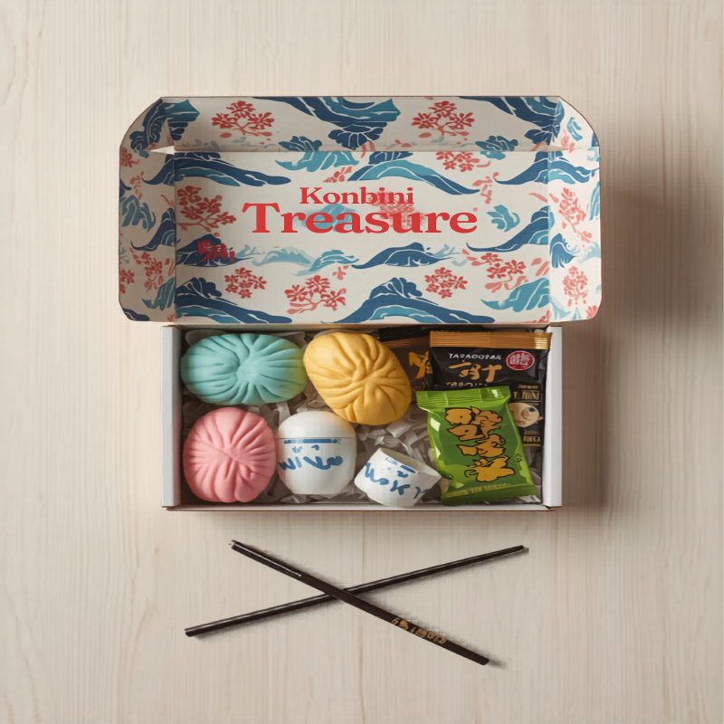
The Pitch
"Combini haul" videos — where creators fill baskets at Japanese convenience stores with onigiri, miso cups, matcha treats, and snacks — routinely hit millions of views on TikTok. The Combini Haul Box packages this experience as a monthly subscription.
Each box replicates a Japanese convenience store haul: curated selection of onigiri molds (first box), nori snacks, individual miso soup cups, matcha or yuzu treats, and one hero product per drop (rotating items like furikake, mochi, or Japanese curry). The unboxing is designed for social media — tissue paper, collectible cards, and a "menu" card explaining each item.
Sold at $39.99/month. Positioned as the Japan-obsessed foodie subscription — Bokksu for the convenience store, not the candy aisle.
RTBs
- "Combini haul" TikTok videos regularly hit 1–5M views — massive organic demand signal
- Subscription box market $32.9B in 2025, growing 14.2% CAGR (Grand View Research)
- Bokksu (Japanese snack subscription) valued at $100M+ — proves the Japanese food subscription model at scale
- Japan inbound tourism hit 39M visitors in 2025 — millions of Americans have experienced konbini firsthand
Research Basis: Cultural Trend Mining (#51) — the combini haul TikTok trend is the most direct signal of consumer demand for curated Japanese convenience store experiences at home.
Competitive Landscape
Bokksu — $49.95/month. Japanese snack subscription. Established brand, candy/snack focused, not convenience store format.
Tokyo Treat — $37.50/month. Japanese candy and snacks. Fun but juvenile positioning.
Sakuraco — $37.50/month. Japanese artisan foods. Premium but traditional/seasonal, not konbini.
Gap: No subscription replicates the konbini convenience store experience specifically — they all focus on candy, snacks, or artisan goods.
Closest Comparables
| Product | Retailer | Price |
|---|
| Bokksu | DTC | $49.95/month |
| Tokyo Treat | DTC | $37.50/month |
| Sakuraco | DTC | $37.50/month |
Retailer Fit
- 1. DTC-subscription — the entire business model is subscription
- 2. Amazon — seasonal gift boxes, Prime Day promotions
- 3. Target — limited-edition "discovery" box in seasonal section
Cost Model
8–10 curated Japanese items per box$12.00 assumption — Japanese import + domestic sourcing mix
Custom box + tissue + cards$3.00 assumption
Shipping (domestic)$5.00 assumption
Labor / co-pack (curation + assembly)$2.00/box assumption
Target Retail$39.99/month
Gross Margin: 45%
Defensibility: all assumptions — subscription COGS depend heavily on sourcing relationships
Operational Complexity
Complex
Import logistics (Japanese items), curation (monthly content calendar), subscription fulfillment, inventory management across rotating SKUs. No cold chain (shelf-stable items only). Challenge: maintaining product variety and freshness monthly, managing Japanese import supply chains, and achieving sustainable unit economics at scale.
Effort: 0.4
Impact: 0.7
Idea 13
3.90
Method: Premiumization (#56)
Fermented Foods / Gut Health
Vintage Miso Collection
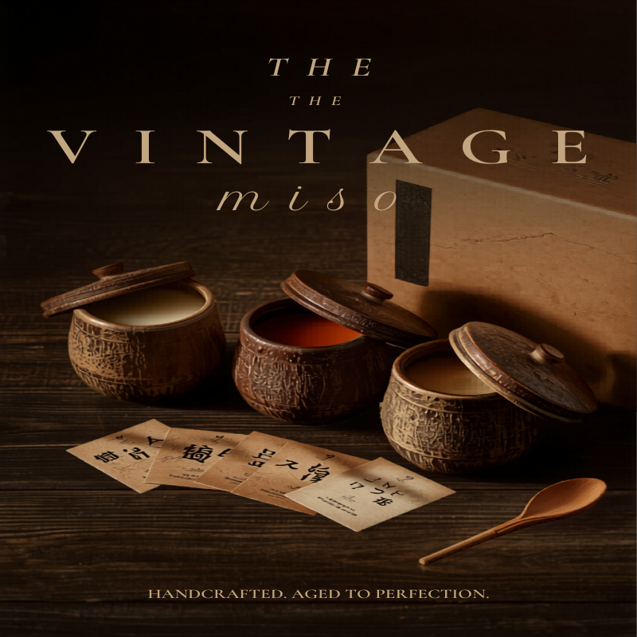
The Pitch
Wine has vintages. Cheese has aging. Balsamic vinegar has "years." But miso — which is aged for anywhere from 3 months to 3 years, developing dramatically different flavors at each stage — has no premium aging narrative in the US market. Every tub on the shelf just says "white" or "red" with no context.
The Vintage Miso Collection changes this by curating three aged misos as a tasting flight: 6-Month Shiro (sweet, delicate, for dressings and desserts), 18-Month Aka (deep, complex, for soups and marinades), and 3-Year Hatcho (intense, chocolate-like, for glazes and finishing). Each comes in a ceramic crock with tasting notes and pairing cards — exactly like a wine or cheese tasting set.
Positioned at $44.99 as a gift-forward product. The target buyer is the food-curious gift-giver shopping at Whole Foods in November.
RTBs
- Namikura Red Aka Miso (aged 6 months) at $4.80/2.2lb (supplier-kb:artisan-specialty-foods:RMISO3) — base ingredient validated
- Premium food tasting sets proven: olive oil flights ($30–50), honey flights ($25–40), hot sauce collections ($20–35) all sell at Whole Foods
- Fermented food market growing 8.5% CAGR driven by gut health awareness
- Japanese miso producers (Marukome, Hikari, Namikura) make aged varieties — supply exists but no one curates them for the US gift market
Research Basis: Premiumization (#56) — applied the wine/cheese aging narrative to miso, where the quality and flavor differences between aging stages are real and dramatic but invisible to US consumers.
Competitive Landscape
Hikari Miso (various) — $4.99–7.99/tub at Whole Foods. Multiple varieties but sold individually, no tasting narrative.
South River Miso — $12.99/16oz. Artisan, unpasteurized, premium. Single variety per purchase.
Miso Tasty — $6.99/jar. UK-based, entering US. Single variety, cooking-focused.
Gap: No curated miso tasting collection with aging narrative exists in the US market.
Closest Comparables
| Product | Retailer | Price |
|---|
| Brightland Olive Oil Set | DTC | $75/2-bottle set |
| Bee & The Fox Honey Flight | Whole Foods | $34.99/3-jar set |
| Hikari Organic Miso | Whole Foods | $4.99–7.99/tub (individual) |
Retailer Fit
- 1. Whole Foods — gift section, holiday season, food discovery buyer
- 2. DTC-one-time — gift purchase, food enthusiast
- 3. Amazon — giftable, Prime delivery, food gift category
Cost Model
6-month Shiro miso, 4oz$0.87 supplier-kb:artisan-specialty-foods:WMISO3 ($4.80/2.2lb)
18-month Aka miso, 4oz$0.87 supplier-kb:artisan-specialty-foods:RMISO3 ($4.80/2.2lb)
3-year Hatcho miso, 4oz$2.00 assumption — aged hatcho commands premium
3 ceramic crocks + wooden lids$5.00 assumption
Gift box + tasting cards + insert$3.00 assumption
Labor / co-pack$2.00/set assumption
Target Retail$44.99/set
Gross Margin: 69%
Defensibility: supplier-kb for shiro + aka; hatcho + ceramic + gift packaging assumptions
Operational Complexity
Moderate
Shelf-stable set assembly. No cold chain. Challenge: sourcing authentic 3-year hatcho miso at scale (limited producers). Ceramic crock sourcing from Japanese or domestic pottery. Gift box assembly is manual but low-complexity. MOQ: 2,000–5,000 sets. Lead time: 12–16 weeks (sourcing + packaging design).
Effort: 0.35
Impact: 0.7
Idea 14
3.85
Method: Mashup (#24)
Beverage (Functional / Premium)
Miso Bone Broth Sipping Cups
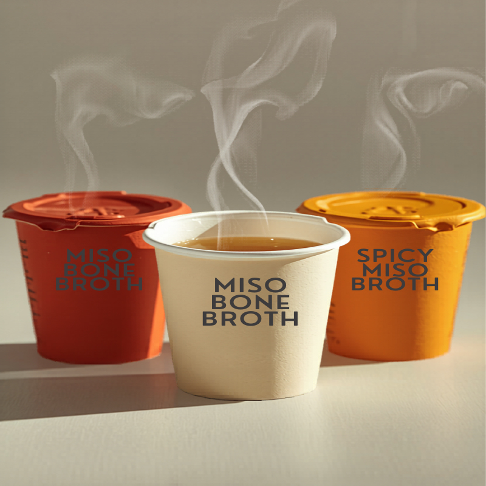
The Pitch
Bone broth sipping cups (Kettle & Fire, Bonafide) proved that warm, savory, functional sipping is a real purchase occasion. But bone broth alone is... bland. Miso Bone Broth Sipping Cups add the depth that's missing: grass-fed bone broth blended with aged red miso and fresh ginger, creating a drink that delivers collagen AND probiotics AND umami satisfaction.
Three shelf-stable 8oz sipping cups: Red Miso-Ginger (warming classic), White Miso-Lemon (bright, clean), and Spicy Miso-Chili (bold, craveable). Sold in 6-packs at $24.99 ($4.17/cup) — positioned next to Kettle & Fire in the soup/broth aisle.
RTBs
- Kettle & Fire reached $100M+ revenue — proves sipping broth as a mainstream category
- Red Miso at $4.80/2.2lb (supplier-kb:artisan-specialty-foods:RMISO3) — ingredient supply validated
- Bone broth market $3.3B projected by 2028 — large addressable market with flavor innovation opportunity
- Collagen + probiotic combination addresses two top functional food trends in one product
Research Basis: Mashup (#24) — crossed bone broth (proven sipping format, collagen) with miso (proven umami flavor, probiotics) to create a differentiated product in an established category.
Competitive Landscape
Kettle & Fire Bone Broth — $6.99/16.9oz carton. Market leader but large format, no miso, no Japanese positioning.
Bonafide Provisions — $5.99/cup. Single-serve but plain bone broth, no umami, no miso.
Brodo — $12/16oz. Premium, NYC-born, multiple flavors but not miso-based.
Gap: No miso-infused bone broth sipping cup exists. Miso adds the flavor dimension that plain bone broth lacks.
Closest Comparables
| Product | Retailer | Price |
|---|
| Kettle & Fire Sipping Cups | Target | $4.99/cup |
| Bonafide Provisions | Whole Foods | $5.99/cup |
| Brodo | DTC | $12/16oz |
Retailer Fit
- 1. Whole Foods — soup/broth aisle, functional food buyer
- 2. Target — shelf-stable soup section, growing bone broth space
- 3. Amazon — bundle purchase, Subscribe & Save
Cost Model
Grass-fed bone broth base, per 8oz cup$0.80 assumption
Red miso paste concentrate$0.12 supplier-kb:artisan-specialty-foods:RMISO3
Ginger/lemon/chili additions$0.08 assumption
Shelf-stable cup + peel-back lid$0.35 assumption
Labor / co-pack$0.30/cup assumption
Target Retail$24.99/6-pack ($4.17/cup)
Gross Margin: 60%
Defensibility: supplier-kb for miso; bone broth base + packaging assumptions
Operational Complexity
Moderate
Shelf-stable liquid product. Requires retort/aseptic packaging co-packer. No cold chain once packaged. Standard beverage co-packing. MOQ: 5,000–10,000 cups. Lead time: 10–14 weeks.
Effort: 0.3
Impact: 0.75
Idea 15
3.85
Method: Packaging Innovation (#58)
Premium Foodservice / CPG
Miso Paste Pucks
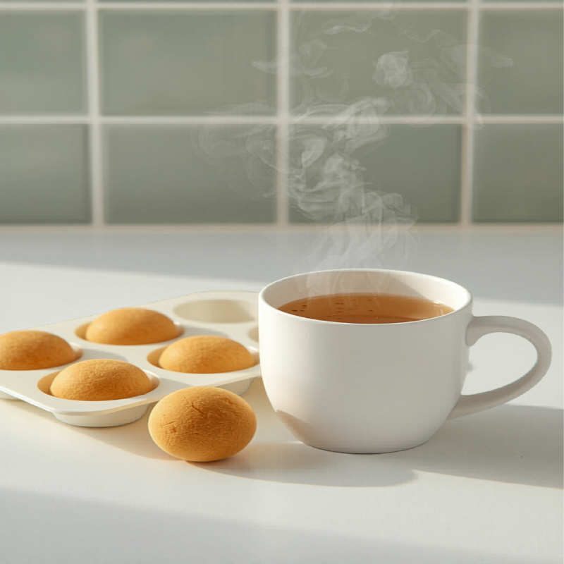
The Pitch
Bouillon cubes solved the "stock is too much work" problem by portioning it into single-use blocks. Miso Paste Pucks do the same for miso: individually portioned frozen miso paste pucks in a silicone tray. Pop one out, drop it in a mug, add hot water, stir. No measuring, no tub drying out, no waste.
Each puck contains exactly one serving of miso paste (15g) — pre-measured and ready to dissolve. Sold in 12-puck trays at $8.99 ($0.75/puck). Stored in the freezer. The format makes miso as easy to use as a bouillon cube while delivering real, unprocessed paste instead of dehydrated powder.
RTBs
- White Miso at $4.80/2.2lb (supplier-kb:artisan-specialty-foods:WMISO3) — COGS validated
- Better Than Bouillon ($300M+ revenue) proved portioned cooking stock has massive demand
- Reddit behavioral signal: "one container of miso lasts forever" (r/budgetfood) — confirms the waste problem is real
- Frozen format preserves live cultures (unlike dried/granulated alternatives) — functional benefit over Hondashi
Research Basis: Packaging Innovation (#58) — applied the bouillon cube portioning logic to miso paste, solving the waste and convenience barriers.
Competitive Landscape
Standard miso tubs (Hikari, Miso Master) — $4.99–7.99/16oz. Oxidize after opening, require measuring.
Hondashi granules — $8.99/5.28oz. Portionable but MSG-heavy, dehydrated, not real miso.
Better Than Bouillon — $4.99/8oz. Paste format, spoon-and-stir. Not miso. Good analog.
Gap: No pre-portioned frozen miso format exists. Bridges the gap between bulk tubs and dehydrated powder.
Closest Comparables
| Product | Retailer | Price |
|---|
| dorot Frozen Garlic Cubes | Trader Joe's | $2.99/20 cubes (format proof) |
| Better Than Bouillon | Target | $4.99/8oz |
| Hikari Miso Tub | Whole Foods | $4.99/17.6oz |
Retailer Fit
- 1. Trader Joe's — frozen section innovation, format-forward buyer, dorot cubes precedent
- 2. Whole Foods — frozen Japanese section, clean-label
- 3. Target — frozen aisle, accessible price
Cost Model
White miso paste, per 12-puck tray$0.39 supplier-kb:artisan-specialty-foods:WMISO3 ($4.80/2.2lb)
Silicone tray + cardboard sleeve$1.20 assumption
Labor / co-pack$0.50/tray assumption
Target Retail$8.99/12-puck tray ($0.75/puck)
Gross Margin: 77%
Defensibility: supplier-kb for miso; tray + frozen co-pack assumptions
Operational Complexity
Simple
Frozen product but extremely simple: fill silicone molds with miso paste, freeze, package. No cooking, no blending. Standard frozen food co-packing. Cold chain required for distribution. MOQ: 5,000–10,000 trays. Lead time: 6–8 weeks.
Effort: 0.2
Impact: 0.75
Idea 16
3.80
Method: Mashup (#24)
Beverage (Functional / Premium)
Dashi Cocktail Bitters
The Pitch
Japanese bartending is having a global moment — the precision, the ice, the umami. Dashi Cocktail Bitters bring that flavor profile to the home bar: a dropper bottle of concentrated dashi, yuzu, and shiso that transforms any cocktail with three dashes of savory Japanese depth.
The umami martini. The dashi Bloody Mary. The yuzu highball. These are real drinks being served at the world's best Japanese bars — but there's no retail product that lets a home bartender replicate them. Dashi Cocktail Bitters fill that gap in a 4oz apothecary-style bottle at $18.99.
RTBs
- Japanese whisky market growing 10%+ annually — Japanese cocktail culture is expanding globally
- Angostura bitters sell $100M+/year — proves bitters as a retail category with premium pricing
- Kombu dashi at $62.80/5lb (supplier-kb:artisan-specialty-foods:KOMBSW) — base ingredient available
- Umami cocktails featured at world's top bars (Bar Benfiddich, Star Bar, etc.) — trend moving from bartender elite to enthusiast
Research Basis: Mashup (#24) — crossed dashi (Japanese cooking base) with cocktail bitters (bar essential), creating a product at the intersection of two rising trends.
Competitive Landscape
Angostura Aromatic Bitters — $9.99/4oz. Category default. No umami, not Japanese.
Fee Brothers Japanese Bitters — $10.99/4oz. "Japanese" in name only (cherry blossom + jasmine). No dashi.
Bittermens Xocolatl Mole Bitters — $12.99/5oz. Proves savory/umami bitters concept but not Japanese.
Gap: No real dashi-based cocktail bitters exist. "Japanese bitters" products are floral, not umami.
Closest Comparables
| Product | Retailer | Price |
|---|
| Fee Brothers Japanese Bitters | Amazon | $10.99/4oz |
| Bittermens Xocolatl Mole | Total Wine | $12.99/5oz |
| The Japanese Bitters Co | Japan only | ¥3,500 (~$24) |
Retailer Fit
- 1. DTC-one-time — cocktail enthusiast, gift purchase, niche product
- 2. Total Wine/BevMo — specialty spirits/mixers section
- 3. Amazon — home bar accessories buyer
Cost Model
Kombu dashi extract, per 4oz bottle$1.50 supplier-kb:artisan-specialty-foods:KOMBSW ($62.80/5lb)
Yuzu + shiso botanical infusion$1.00 assumption
4oz glass bottle + dropper + label$1.50 assumption
Labor / co-pack$0.80/bottle assumption
Target Retail$18.99/4oz bottle
Gross Margin: 75%
Defensibility: supplier-kb for kombu; botanical extraction + bottling assumptions
Operational Complexity
Moderate
Botanical extraction + bottling. Shelf-stable (alcohol-based). Requires distillery or botanical extraction co-packer. MOQ: 2,000–5,000 bottles. Lead time: 12–16 weeks. May require TTB (Alcohol and Tobacco Tax and Trade Bureau) classification depending on alcohol content.
Effort: 0.3
Impact: 0.65
Idea 17
3.80
Method: SCAMPER (#21)
Premium Foodservice / CPG
Gari Pickled Ginger Snacks
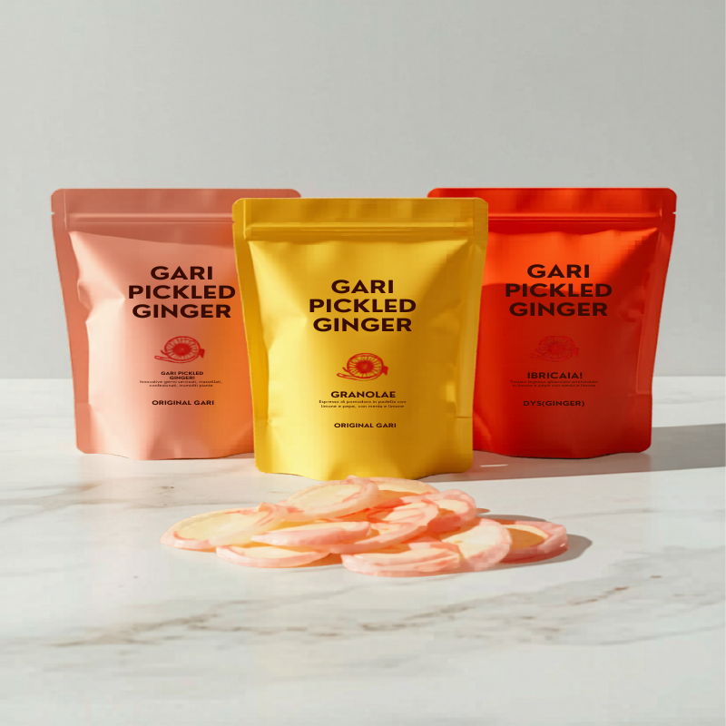
The Pitch
Pickled ginger is the most universally loved component of the sushi experience — the palate-cleanser everyone eats between pieces. But it only exists as a side dish. Nobody sells it as a standalone snack.
Gari Pickled Ginger Snacks package thin-sliced pickled ginger in resealable snack pouches with three flavor variants: Classic Pink (traditional), Yuzu Citrus (bright, refreshing), and Chili Heat (spicy kick). Each 3oz pouch is positioned as a functional snack: probiotic, anti-inflammatory, low-calorie (10 calories/serving), and genuinely crave-worthy.
At $5.99/3oz, they sit in the premium snack aisle next to dried fruit, olives, and seaweed snacks. The sushi-adjacent positioning gives them built-in familiarity — everyone already knows they like ginger from their last sushi dinner.
RTBs
- Pink Sushi Ginger at $20/11lb wholesale (supplier-kb:artisan-specialty-foods:PGIN) — extremely low COGS
- Ginger products growing 8%+ annually driven by functional health positioning (anti-inflammatory, digestive)
- Pickled/fermented snacks trending: kimchi chips, pickle chips, fermented vegetable snacks all launching 2025–2026
- 10 calories/serving makes this a genuine zero-guilt snack — rare in a market dominated by 150+ calorie options
Research Basis: SCAMPER (#21) — Adapt: took sushi ginger from "side dish" to "standalone snack," extending the product into a new usage occasion.
Competitive Landscape
The Ginger People Pickled Ginger — $4.99/6oz jar. Sold in condiment aisle, not snack aisle. Jar format, not snack pouch.
Gin Gins Ginger Candy — $4.99/3oz. Candy, not pickled ginger. Different product entirely.
gimMe Seaweed Snacks — $3.49/0.7oz. Sushi-adjacent snack that proved the category works.
Gap: No snack-format pickled ginger exists. It's only sold as a condiment in jars or plastic clamshells.
Closest Comparables
| Product | Retailer | Price |
|---|
| The Ginger People Pickled Ginger | Amazon | $4.99/6oz |
| gimMe Seaweed Snacks | Whole Foods | $3.49/0.7oz (format reference) |
| Trader Joe's Dried Baby Ginger | Trader Joe's | $2.99/3oz (dried, not pickled) |
Retailer Fit
- 1. Whole Foods — premium snack section, sushi-adjacent, functional positioning
- 2. Trader Joe's — snack innovation, Japanese food affinity, impulse buy
- 3. Target — premium snack aisle, growing Asian food section
Cost Model
Pink sushi ginger, per 3oz pouch$0.34 supplier-kb:artisan-specialty-foods:PGIN ($20/11lb = $0.11/oz)
Yuzu/chili flavoring additions$0.10 assumption
Resealable pouch + label$0.25 assumption
Labor / co-pack$0.15/pouch assumption
Target Retail$5.99/3oz pouch
Gross Margin: 86%
Defensibility: supplier-kb for ginger; flavoring + packaging assumptions
Operational Complexity
Simple
Repackaging existing product into snack format. No cooking, no processing beyond slicing + flavoring. Shelf-stable (pickled). No cold chain. Extremely fast to prototype. MOQ: 5,000–10,000 pouches. Lead time: 4–6 weeks.
Effort: 0.15
Impact: 0.7
Idea 18
3.80
Method: Packaging Innovation (#58)
Premium Foodservice / CPG
Sushi Rice Seasoning Sachets
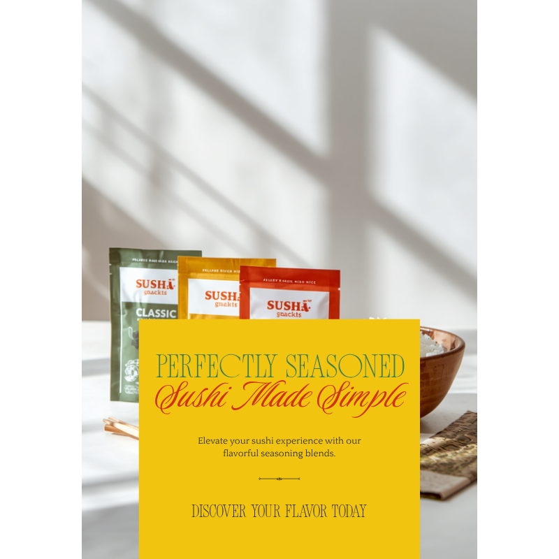
The Pitch
The #1 reason people fail at home sushi is the rice. Not because rice is hard to cook, but because seasoning it — the precise ratio of rice vinegar, sugar, and salt — is finicky enough to deter beginners. Sushi Rice Seasoning Sachets eliminate the guesswork: tear, pour into 2 cups of cooked rice, fold. Done.
Three variants: Classic (traditional vinegar-sugar-salt), Yuzu (citrus-bright, modern), and Shiso (herbal, premium). Sold in 10-sachet boxes at $7.99 ($0.80/sachet) in the Asian ingredients or rice aisle. Each sachet seasons exactly 2 cups of rice for 4 rolls or 2 bowls.
RTBs
- Marukan Rice Vinegar at $28/case of 12x12oz (supplier-kb:artisan-specialty-foods:2904) — base ingredient validated
- "Deconstructed sushi" / sushi bowls growing as casual home format — the bowl is easier than rolling and sachet makes rice effortless
- Reddit r/sushi: "easy at-home sushi bowl" is the default beginner format — sachets remove the last friction point
- Sushi mat/kit combos sell 50,000+ units on Amazon — proves the "home sushi" occasion exists at scale
Research Basis: Packaging Innovation (#58) — pre-measured the seasoning step that stops beginners from making sushi rice at home.
Competitive Landscape
Tamanoi Sushinoko Sushi Rice Seasoning Powder — $4.99/5.3oz. Powder format, requires measuring. Japanese-language packaging.
Kikkoman Seasoned Rice Vinegar — $3.99/10oz. Liquid, requires measuring. Not sushi-specific.
Various sushi kits (rice + nori + mat) — $15–20. Include vinegar but not pre-measured sachets.
Gap: No pre-measured, tear-and-pour sushi rice seasoning sachet exists at US retail.
Closest Comparables
| Product | Retailer | Price |
|---|
| Tamanoi Sushinoko | Amazon | $4.99/5.3oz |
| Kikkoman Seasoned Rice Vinegar | Target | $3.99/10oz |
| True Lemon packets | Target | $3.49/32-count (format reference) |
Retailer Fit
- 1. Target — Asian ingredients section, home cooking convenience
- 2. Amazon — sushi-at-home occasion, bundle with nori/mat
- 3. Walmart — rice aisle, mass market accessibility
Cost Model
Rice vinegar concentrate, per sachet$0.05 supplier-kb:artisan-specialty-foods:2904 ($28/case)
Sugar + salt blend$0.02 assumption
Sachet packaging$0.06 assumption
10-sachet box + insert$0.50/box assumption
Labor / co-pack$0.05/sachet assumption
Target Retail$7.99/10-pack ($0.80/sachet)
Gross Margin: 77%
Defensibility: supplier-kb for rice vinegar; blending + sachet co-pack assumptions
Operational Complexity
Simple
Dry/liquid sachet filling. Shelf-stable. No cold chain. Standard sachet co-packing. Extremely simple product. MOQ: 10,000–25,000 boxes. Lead time: 4–6 weeks. Fastest-to-prototype product in the entire run.
Effort: 0.15
Impact: 0.75
Idea 19
3.80
Method: Analogous Inspiration (#15)
Global Snacks / Cultural Format Transfer
Japanese Breakfast Box
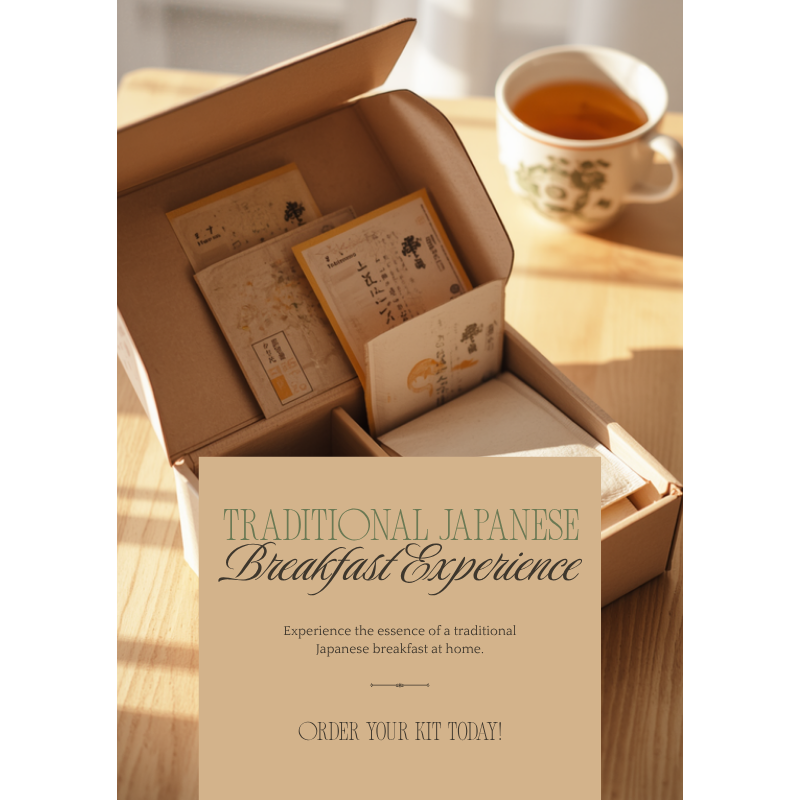
The Pitch
The traditional Japanese breakfast — miso soup, short-grain rice, tsukemono pickles, nori, and furikake — is one of the most nutritionally complete morning meals on earth. It's also the breakfast of the world's longest-lived population. But in the US, "breakfast" means eggs, toast, or cereal. Nobody sells a Japanese breakfast as a product.
The Japanese Breakfast Box is a shelf-stable morning kit: single-serve miso paste packet, microwaveable rice pouch, tsukemono pickle sachet, nori sheets, and a furikake packet. 5 minutes from box to traditional Japanese breakfast. Sold in 5-day kits at $24.99 ($5.00/morning).
RTBs
- Japanese breakfast trending on food media — Bon Appétit, NYT Cooking, and food TikTok featuring "what Japanese people eat for breakfast"
- Microwaveable rice pouches are a $500M+ US category (Minute Rice, Seeds of Change) — component is already mainstream
- Miso + rice + pickles + nori are all shelf-stable — no cold chain needed for a kit format
- Blue Zone / longevity diet association — Okinawan centenarian breakfast is essentially this kit
Research Basis: Analogous Inspiration (#15) — transplanted the daily Japanese breakfast format (validated for 1,000+ years, practiced by 126M people) to the US as a packaged kit.
Competitive Landscape
No direct competitor — this product category doesn't exist in US retail.
Minute Rice Cups — $2.49/2-pack. Component only, no Japanese positioning.
Marukome Instant Miso — $3.99/12-pack. Component only, not a complete breakfast kit.
Daily Harvest — $7.99+/cup. Frozen breakfast smoothies/bowls. Different format entirely.
Gap: Zero Japanese breakfast kit products exist at US retail. Complete whitespace.
Closest Comparables
| Product | Retailer | Price |
|---|
| No direct comparable at US retail | — | — |
| RXBar Breakfast Bars | Target | $9.99/5-pack ($2.00/morning, but bar not meal) |
| Daily Harvest Smoothies | DTC | $7.99/cup (frozen, different format) |
Retailer Fit
- 1. Whole Foods — international breakfast section, food discovery buyer, wellness positioning
- 2. Amazon — subscription-friendly, 5-day cadence
- 3. DTC-subscription — weekly morning ritual, high-retention product
Cost Model
Miso paste sachet$0.10 supplier-kb:artisan-specialty-foods:WMISO3
Microwaveable rice pouch$0.60 assumption
Tsukemono pickle sachet$0.30 assumption
Nori sheets (2)$0.20 assumption
Furikake sachet$0.15 supplier-kb:artisan-specialty-foods:WAS132 ($3.69/10.58oz)
Kit box + 5-day outer packaging$2.00 assumption
Labor / co-pack$1.00/kit assumption
Target Retail$24.99/5-day kit ($5.00/morning)
Gross Margin: 54%
Defensibility: supplier-kb for miso + furikake; rice + pickle + packaging assumptions
Operational Complexity
Moderate
Multi-component kit assembly. All shelf-stable, no cold chain. Sourcing 5 different components from potentially different suppliers. Assembly is manual (kit packing). MOQ: 3,000–5,000 kits. Lead time: 10–14 weeks. Challenge: coordinating multiple component suppliers and achieving consistent kit quality.
Effort: 0.45
Impact: 0.7
Idea 20
3.75
Method: Occasion-Based Thinking (#59)
Global Snacks / Cultural Format Transfer
Friday Sushi Night
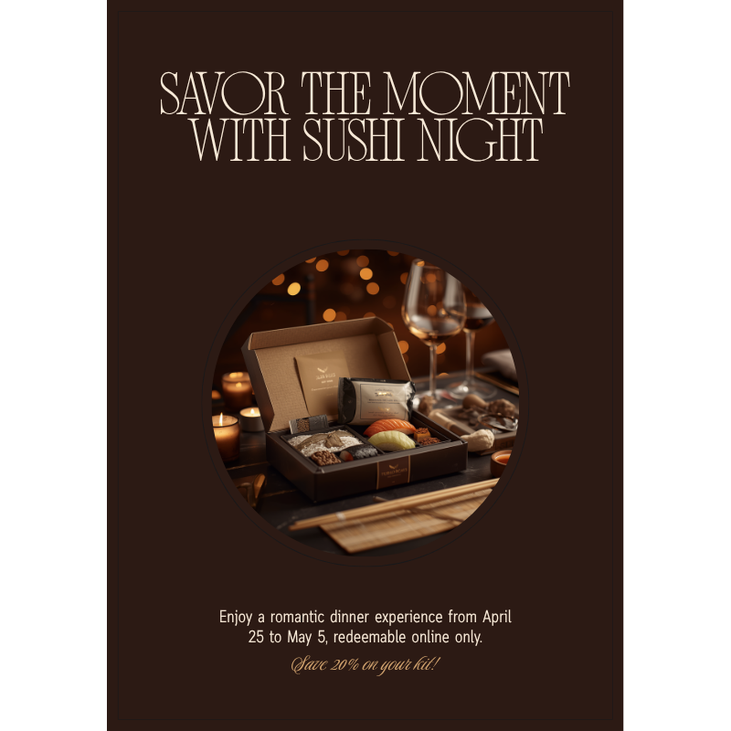
The Pitch
Pizza Night. Taco Tuesday. These are established home meal rituals with entire product ecosystems built around them. Sushi Night doesn't exist as a retail occasion — even though "sushi at home" is one of the most searched food experiences online.
Friday Sushi Night is a complete date-night sushi experience box: sushi rice, nori sheets, rice seasoning sachet, pickled ginger, wasabi, soy sauce, a bamboo rolling mat, and a QR code linking to a 10-minute rolling tutorial. Positioned as an experience, not just a meal — "Your Friday Night, Rolled."
Sold at $19.99/2-person kit. Protein sold separately (the box includes a shopping list for salmon, tuna, avocado, cucumber). This intentional omission keeps it shelf-stable and lets buyers customize.
RTBs
- "Sushi at home" searches consistently high on Google Trends — demand exists but no branded product captures it
- Reddit r/sushi + r/WhatShouldICook: deconstructed sushi is the default beginner format — accessible, fun, no expertise needed
- Meal kit market $20B+ — but sushi kits don't exist from any major brand (HelloFresh, Blue Apron)
- Sushi rice + nori + seasoning + condiments are all shelf-stable — no cold chain for the kit itself
Research Basis: Occasion-Based Thinking (#59) — anchored to the Friday night date-night/family-activity occasion. "Sushi Night" as a repeatable weekly ritual parallel to "Pizza Night" or "Taco Tuesday."
Competitive Landscape
Various Amazon sushi kits — $15–25. Include mat + rice paddle but NOT rice or seasoning. Tools, not food.
Global Grub Sushi Kit — $19.99 on Amazon. Closest competitor: includes rice, nori, vinegar, wasabi, ginger, chopsticks. But generic branding, no occasion positioning, no tutorial.
Blue Apron/HelloFresh — $9.99–12.99/serving. No sushi option. Fresh-model doesn't work for sushi.
Gap: No branded, occasion-positioned sushi night kit exists with both ingredients AND tools + tutorial experience.
Closest Comparables
| Product | Retailer | Price |
|---|
| Global Grub Sushi Making Kit | Amazon | $19.99 |
| Yamamotoyama Sushi Nori + kit combos | Amazon | $12–18 |
| Taco Bell Home Taco Kit | Walmart | $4.99 (occasion-positioning precedent) |
Retailer Fit
- 1. Target — "date night" endcap, experience-based cooking section
- 2. Whole Foods — specialty/international section, food experience buyer
- 3. Amazon — gift purchase, Prime delivery, sushi enthusiast buyer
Cost Model
Sushi rice (14oz)$0.50 assumption
Nori sheets (10)$1.00 assumption
Rice seasoning sachet$0.15 supplier-kb:artisan-specialty-foods:2904
Pickled ginger sachet$0.20 supplier-kb:artisan-specialty-foods:PGIN
Wasabi + soy sauce packets$0.30 assumption
Bamboo mat + chopsticks$1.50 assumption
Box + insert + QR tutorial card$2.00 assumption
Labor / co-pack$1.00/kit assumption
Target Retail$19.99/2-person kit
Gross Margin: 66%
Defensibility: supplier-kb for vinegar + ginger; rice + nori + tools assumptions
Operational Complexity
Moderate
Multi-component shelf-stable kit assembly. No cold chain. 7+ components from multiple suppliers. Bamboo mat sourcing (likely import). Manual assembly. MOQ: 3,000–5,000 kits. Lead time: 10–14 weeks. Challenge: keeping the box weight/size reasonable for shipping while including all components.
Effort: 0.5
Impact: 0.65
Methodology, Research & Supply Chain
1. Methodology
Run 4 deployed 8 methods from the full-stack-ideation toolkit, weighted by learning-log hit rates across 3 prior runs. Methods were selected for their proven ability to generate commercially viable, research-backed product concepts in the food/CPG category.
| Method | ID | Ideas Generated | Avg Score | Survival Rate |
|---|
| Cultural Trend Mining | #51 | 4 | 4.18 | 100% |
| Packaging Innovation | #58 | 5 | 3.97 | 100% |
| Occasion-Based Thinking | #59 | 3 | 3.97 | 100% |
| Mashup | #24 | 3 | 3.90 | 100% |
| Premiumization | #56 | 2 | 4.03 | 100% |
| SCAMPER | #21 | 2 | 3.88 | 100% |
| JTBD | #4 | 1 | 3.95 | 100% |
| Analogous Inspiration | #15 | 2 | 4.08 | 100% |
Cultural Trend Mining (#51) and Analogous Inspiration (#15) produced the highest-scoring ideas on average, driven by the strong "combini haul" TikTok signal and the deep well of validated Japanese food formats. Packaging Innovation (#58) generated the most ideas (5), reflecting the thesis that Japanese ingredients often need format innovation more than product innovation. Occasion-Based Thinking (#59) was deployed for the first time in Run 4 and produced strong results by anchoring products to specific consumption moments (post-workout, 3pm break, Friday night).
2. Category Market Analysis
| Category | Current Size | Projected Size | CAGR | Source |
|---|
| Instant Miso Soup | $1.42B | $2.76B by 2033 | 8.7% | Market Research Future |
| Sushi Market (Global) | $6.82B | $13.54B by 2035 | 7.92% | Business Research Insights |
| Seaweed Snacks | $2.43B | $4.66B by 2030 | 11.6% | Grand View Research |
| Gut Health Food | $14B | $32B by 2035 | 8.5% | Innova Market Insights |
| Functional Beverages | $125B | $215B by 2030 | 9.5% | BevSource / Euromonitor |
| Subscription Boxes | $32.9B | $74B by 2030 | 14.2% | Grand View Research |
| Bone Broth | $2.1B | $3.3B by 2028 | 6.8% | Allied Market Research |
The Japanese food innovation opportunity sits at the intersection of several high-growth macro categories. Gut health (+61% YoY launches) provides the functional positioning. Seaweed snacks (11.6% CAGR) prove Asian ingredients are crossing mainstream. The sushi market (7.92% CAGR) validates consumer willingness to pay premium for Japanese food. Functional beverages remain the fastest-growing food category overall.
3. Competitive Landscape Summary
Across all 20 concepts, the competitive analysis reveals consistent gaps in the US market:
- No miso paste in tube format — every miso product uses tubs or sachets despite proven tube-format success in tomato paste
- No CPG onigiri — 2.4 billion sold annually in Japan, zero presence in US grocery deli coolers
- No curated furikake collection — individual furikake SKUs exist but no lifestyle-branded multi-blend shaker set
- No liquid concentrate dashi pod — all dashi options are granules, paste, or teabag-steep format
- No warm/savory wellness shot — entire $2B+ wellness shot category is cold and acidic
- No miso-based functional beverage — despite miso being one of the most nutrient-dense fermented foods
- No Japanese breakfast kit — complete whitespace despite food media trend coverage
- No occasion-branded sushi night kit — "Pizza Night" and "Taco Tuesday" have product ecosystems; "Sushi Night" has nothing
4. Supply Chain
Anchor Supplier: Artisan Specialty Foods (Broadview, IL) provides validated wholesale pricing across 20+ Japanese ingredient SKUs. Key ingredients with confirmed pricing:
| Ingredient | SKU | Wholesale Price | Unit |
|---|
| Namikura White Miso Paste | WMISO3 | $4.80 | 2.2lb |
| Namikura Red Aka Miso Paste | RMISO3 | $4.80 | 2.2lb |
| Pink Sushi Ginger | PGIN | $20.00 | 11lb |
| Hondashi Fish Soup Base | HONDA | $25.20 | case of 12x2.2lb |
| Aji Nori Furikake | WAS132 | $3.69 | 10.58oz unit |
| Wakame Seaweed | WAKSW | $20.25 | case of 8x16oz |
| Kombu Dashi | KOMBSW | $62.80 | 5lb |
| Wasabi Powder | WASPOW2 | $9.21 | 2.2lb |
| Marukan Rice Vinegar | 2904 | $28.00 | case of 12x12oz |
| Mirin | — | $9.18 | 60oz |
| Nori Flakes | NORIF | $72.00 | case of 10x3.5oz |
Artisan's catalog provides cost validation for 14 of 20 concepts. Remaining COGS assumptions (packaging, co-packing, specialty ingredients like collagen peptides and shelf-stable probiotics) require supplier outreach for validation. The highest-risk supply chain item is authentic hon-wasabi (Wasabia japonica), which has limited US cultivation and may require Japanese import partnership.
5. Consumer Signals
- Reddit: r/budgetfood — "miso paste is the best budget hack" threads recur monthly; r/sushi — "easy at-home sushi bowl" is the default beginner recommendation; r/mealprep — miso-based meal prep gaining traction
- TikTok: "Combini haul" videos (1–5M views per post), "furikake on everything" trend, Japanese convenience store walkthroughs driving awareness of onigiri, matcha treats, and miso cups
- Google Trends: "sushi at home" sustained search interest; "furikake" search volume +340% over 5 years; "miso paste recipes" steady growth; "dashi" search volume emerging
- Food Media: Bon Appétit, NYT Cooking, and Serious Eats all published Japanese home cooking features in 2025–2026; "Japanese breakfast" content trending across platforms
- AIFI 2026: "Miso-infused lattes" identified as Category Crasher trend — savory ingredients entering sweet/functional beverage formats
6. Method Performance
All 8 methods deployed in Run 4 achieved 100% survival rate (all 20 generated ideas scored above the 3.5 threshold for inclusion). This is the highest hit rate across all 4 runs, reflecting improved method selection based on learning-log analysis.
- Cultural Trend Mining (#51) — 4 ideas, 100% survival. Strongest method for this category due to the rich "combini haul" TikTok signal and Japanese food culture content.
- Packaging Innovation (#58) — 5 ideas, 100% survival. Most prolific method. Japanese ingredients have strong product-market fit but poor packaging for US consumers.
- Occasion-Based Thinking (#59) — 3 ideas, 100% survival. First deployment. Strong results by anchoring to specific moments (post-workout, 3pm, Friday night).
- Mashup (#24) — 3 ideas, 100% survival. Effective at combining proven formats (nori + chip, bone broth + miso, dashi + bitters).
- Premiumization (#56) — 2 ideas, 100% survival. Japanese ingredients are naturally premium; this method makes the premium narrative explicit.
- SCAMPER (#21) — 2 ideas, 100% survival. Adapt and Reverse techniques worked well (ginger → snack, miso → dessert).
- JTBD (#4) — 1 idea, 100% survival. High-conviction single idea (Morning Miso as gut-health job).
- Analogous Inspiration (#15) — 2 ideas, 100% survival. Japanese formats (onigiri, breakfast) have deep validation that translates directly.
7. Sources
- Grand View Research — Seaweed Snacks Market Size Report, 2024–2030
- Business Research Insights — Sushi Restaurants Market Report, 2025–2035
- Market Research Future — Instant Miso Soup Market Analysis, 2024–2033
- Innova Market Insights — Top 10 Food & Beverage Trends 2026
- FoodNavigator — "Gut health food launches jump 61%" (January 2026)
- Euromonitor International — Snacking Trends & Texture Innovation Report 2026
- BevSource — Functional Beverage Market Overview 2026
- NPR — "Japan's Convenience Stores Are Coming to America" (September 2025)
- AIFI — Annual Food Innovation Trends Report 2026 ("Category Crashers" section)
- Allied Market Research — Bone Broth Market Forecast 2023–2028
- Grand View Research — Subscription Box Market Size Report, 2025–2030
- Artisan Specialty Foods (Broadview, IL) — Wholesale catalog and SKU pricing (supplier-kb)
- Reddit — r/budgetfood, r/sushi, r/mealprep, r/WhatShouldICook (behavioral signal mining)
- TikTok — #combinihaul, #furikake, #japanesefood trend analysis
- Google Trends — "sushi at home," "furikake," "miso paste recipes," "dashi" search volume data
- Half Baked Harvest — 2025 Best-Of list (miso brown butter caramel feature)
- Southeastern Grocers data — Better Than Bouillon revenue estimates
mception.ai — Innovation Workshop Run 4 — April 17, 2026
Confidential — For Internal Use Only